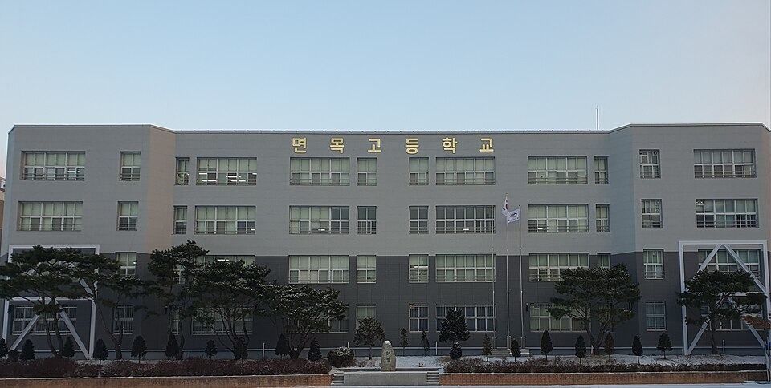
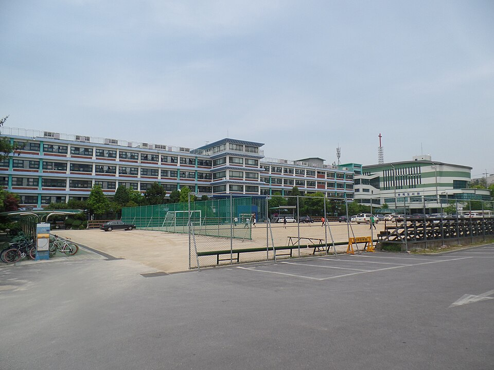

중랑구는 학원가가 한곳에 몰려 있지 않은 지역입니다. 면목동의 면목고·면목중, 묵동의 원묵고·원묵중, 상봉·중화의 상봉중·중화고, 신내 쪽 신현고까지 동네마다 흩어져 있어서, 학원 하나로 커버가 안 됩니다. 그래서 중랑구에서는 집으로 오는 국어과외·수학과외를 찾는 가정이 많습니다.
오늘은 중랑구에 직접 찾아가는 선생님 중 두 분을 소개합니다. 한 분은 교육심리를 전공한 국어 선생님, 한 분은 수능 수학 만점 출신 수학·과학 선생님입니다.
중등·고등 국어과외에 학습심리 코칭을 함께 하는 흔치 않은 조합입니다. 국어국문학과 교육심리학을 함께 전공하고 학습상담·학습치료로 석사과정까지 밟아서, 왜 이 학생이 국어를 어려워하는지를 심리 쪽에서 접근합니다.
중·하위권 전문이고, 한 문제를 이해할 때까지 반복 설명하며 질의응답을 이어 가는 방식입니다. 따뜻하고 끈기 있게 기다려 주는 편이라, 국어에서 자신감을 잃은 학생이 다시 붙잡기 좋습니다. 수업은 화·목·금 낮 시간과 토요일 오후에 열려 있습니다.
박ㅇ정 선생님 상세 프로필 →중랑구에서 수학과외와 과학을 한 분에게 맡기려 할 때 맞는 선생님입니다. 수능 수학 만점 출신이지만 상위권만 보는 게 아니라, 점수와 학년에 대한 편견 없이 학생 수준에 맞춰 갑니다.
수의 원리와 도형의 원리를 기초부터 짚어 개념을 세우고, 수업 외의 공부 관리법과 학습 계획표 작성까지 알려 줍니다. 공부에 흥미가 없는 학생에게 목표를 세워 주는 데도 강합니다. 원묵고·중화고처럼 이과 내신이 필요한 학생에게 특히 맞습니다.
고ㅇ진 선생님 상세 프로필 →
학교마다 시험 출제 경향과 수행평가 비중이 달라서, 학교별로 준비법을 따로 정리해 두었습니다.
👉 중랑구 국어과외 선생님 · 중랑구 수학과외 선생님 · 관리 학교 24곳 전체 보기
학년과 과목, 원하는 시간대만 알려주시면 24시간 안에 맞는 선생님을 추천해 드립니다.